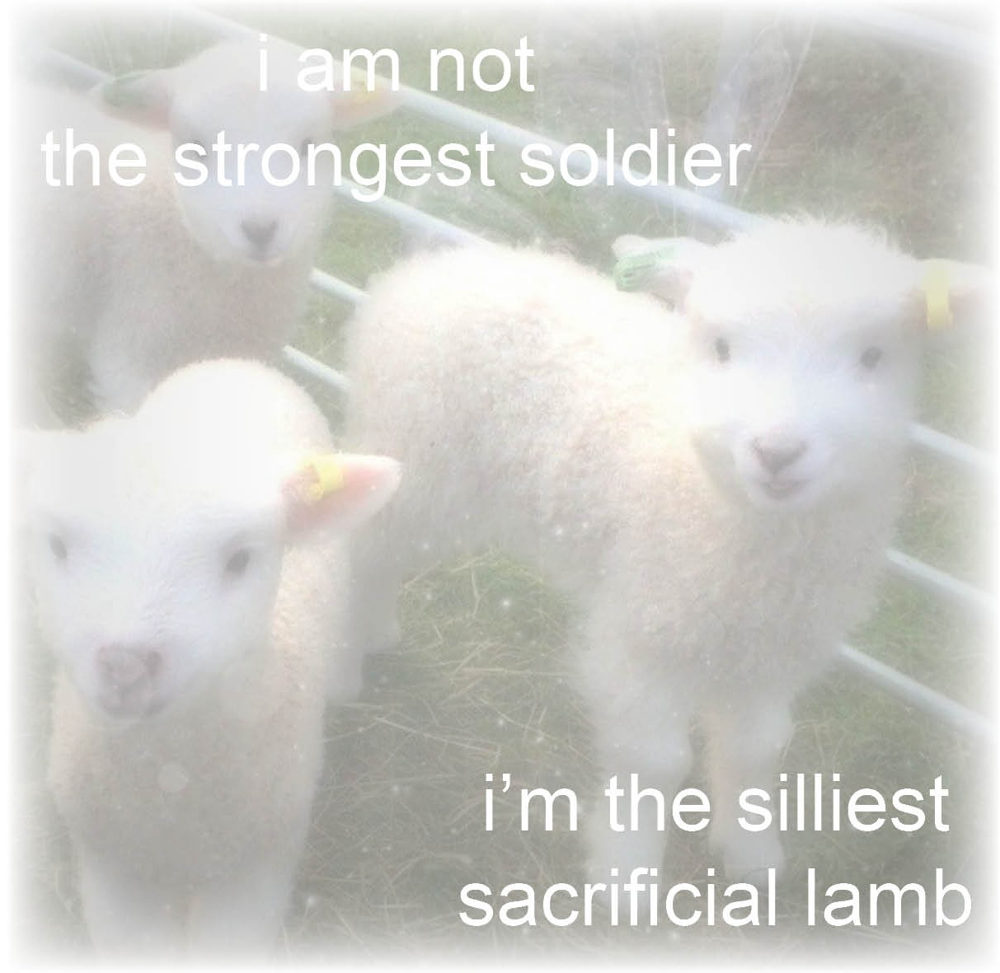
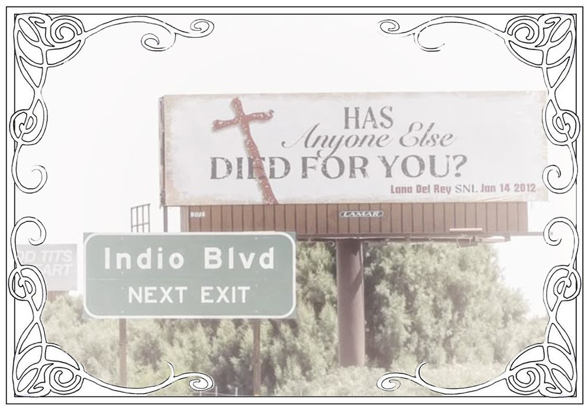
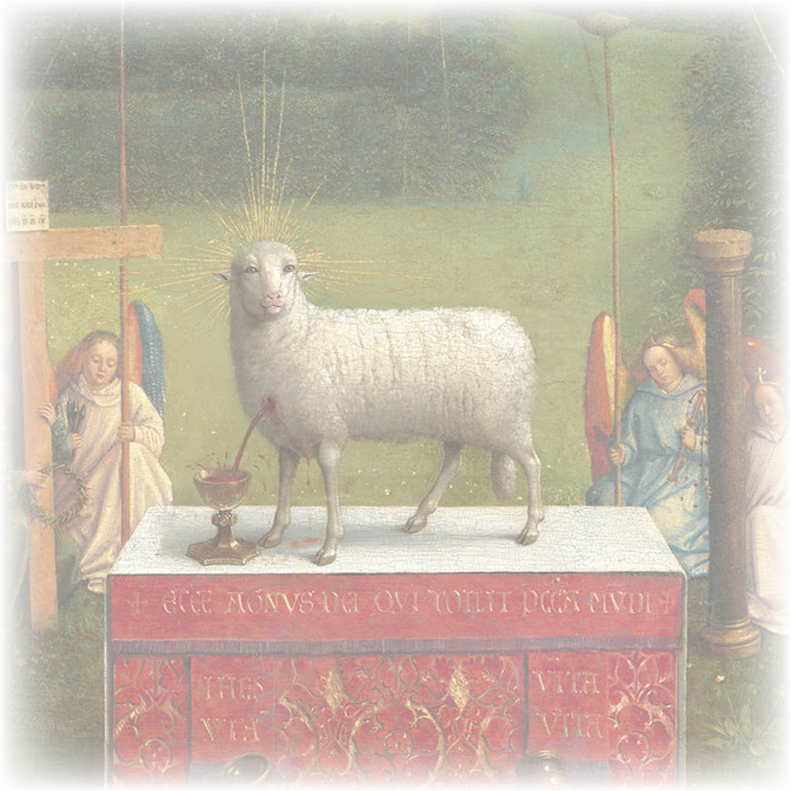
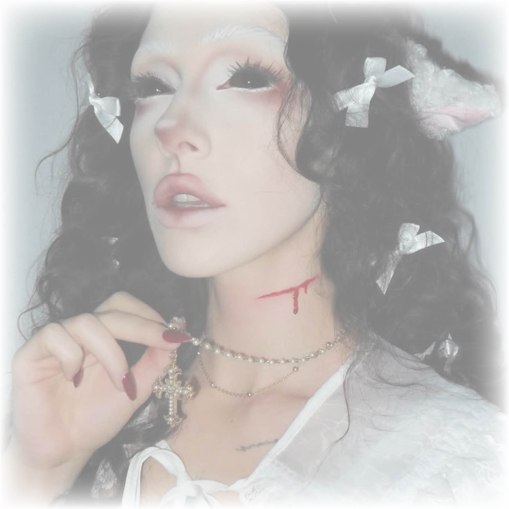
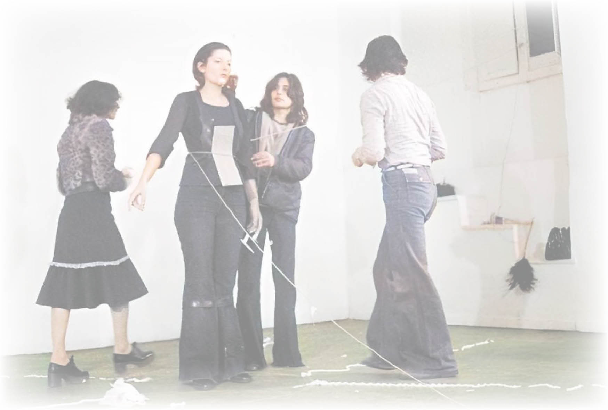
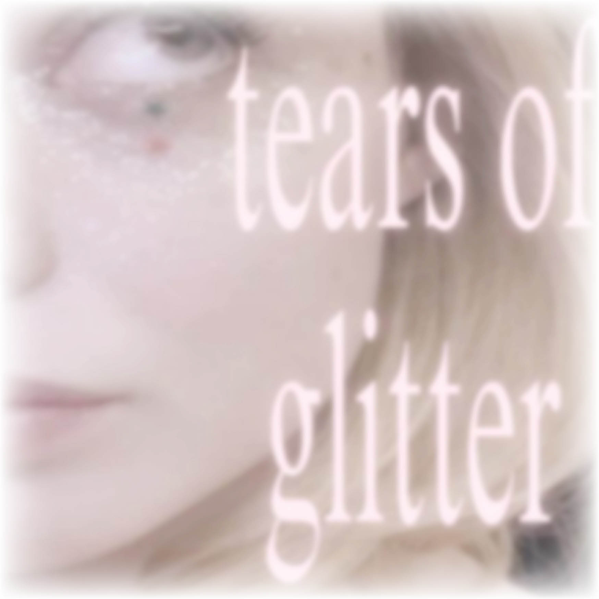
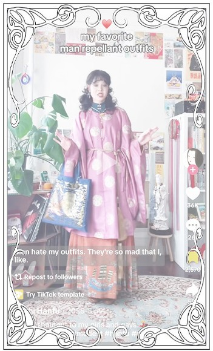
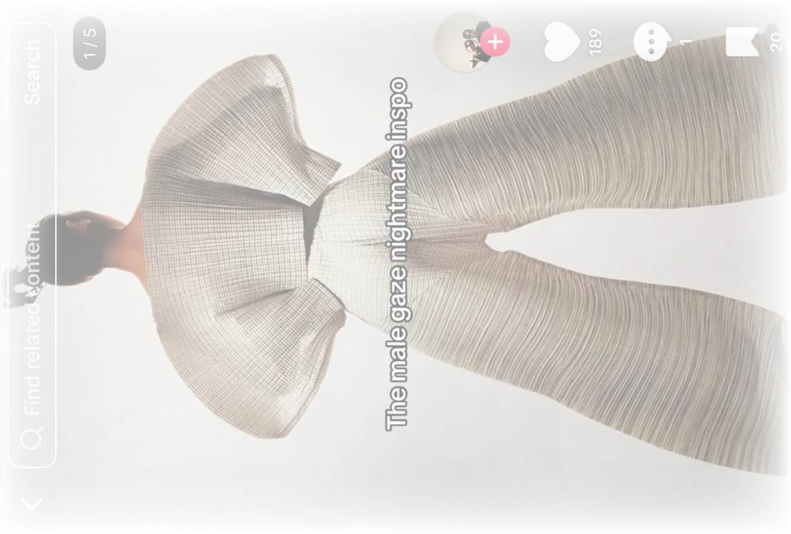
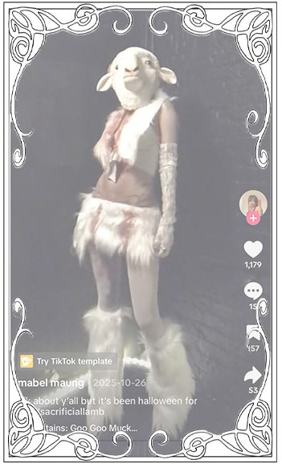

Abstract
The tragic story of the sacrificial lamb is one we have all heard at some point. It is a story about a pure, innocent, and docile creature, sacrificed in the name of the greater good. Willingly led towards the altar, happy to give her life, for the sins of others. The focus in these stories, however, is not on the lamb but on her usefulness. She is merely an object used for the redemption of sinners.
However, more recently, in social media culture, the aesthetic of this tragic fate has re-emerged, but this time in the context of feminism. The sacrificial lamb is now something for women to compare themselves to, either as a costume or as a way to give meaning to the suffering that is so commonly associated with being a woman today.
By analysing social media culture, medical research, and religious writing, this text will examine why the sacrificial lamb is reemerging on social media and why women are comparing themselves to it. Whether it is used to romanticize suffering, as a costume, or as an act of rebellion, its continued relevance points to a powerful image of innocence and suffering.

Fig 01.
Sacrificial lamb core
One would think the idea of being a sacrificial lamb would seem like a horrific fate. Weak, docile, and with a life so unimportant that any personal goals or agency would have to be set aside for the well-being of others. A blank slate of purity for people to project their dreams onto. A tragic fate. A life set aside for the common good.
Yet social media is flooded with content of women comparing themselves to this exact fate. Women are dressing themselves in innocent, cute, and aesthetically pleasing lamb costumes, with artificial blood dripping from their necks, a perfect mix of pure innocence and horrific gore. Dark, melancholic music is playing in the background, accompanied by messages of suffering in large, bold letters. “You were always the sacrificial lamb, the one who suffered for the greater good. But look at you now, you’re nothing but the remaining pieces that no one wants ” Video from TikTok
Has anyone else died for you?

Fig 02.
Scrolling through sacrificial lamb content on social media, the religious references are all but slapping me in the face. “Has anyone else died for you?” “Ok, which cult wants to sacrifice me?”, and “I’m the priest's favourite sacrificial lamb” are only some of the captions that stand out. The content creators are clearly referencing religion, but I don’t get the impression that any of them are actually religious. It seems more like a dark aesthetic they are adopting to show off their suffering, mental illness, or “quirky” nature. Like the ultimate proof, “they're not like other girls.” My own relationship with religion is quite complicated, almost non-existent, and my knowledge is limited to what I picked up during mandatory visits to church during elementary school. The story of Jesus and the sacrifices of animals was something I grew up hearing about, but it didn’t leave a lasting impression. It seemed like an outdated practice, one that didn’t seem relevant today.
However, the prominent religious presence in this specific area of social media did make me curious about where the sacrificial lamb originates from. I found that the practice of sacrificing lambs and other animals is prominent in several religions, and in some cases is still practiced today. In Islam, they have a whole holiday centred around it called “The Feast of Sacrifice” or “Eid al-Adha” . During this holiday, they sacrifice a cow, sheep, or a goat to commemorate Abraham's willingness to sacrifice his son.
In Judaism, during Passover, they believed that by slaughtering a “spotless lamb” and smearing its blood on their doorposts, they would protect their firstborn sons from the 10th plague sent by God . And in Christianity, Jesus’s sacrifice is compared to that of the lambs during Passover. As written in Isaiah 53:7, Jesus "was like a lamb led to the slaughter." Like the lamb, Jesus was considered innocent and without fault, resulting in a perfect sacrifice. His violent crucifixion would save humanity from its sins.
“If someone brings a lamb as their sin offering, they are to bring a female without defect.”
(Leviticus, 4:32)
Whether sacrificing a lamb provided protection or redemption, I get the impression it is only a temporary solution. Instead of a lifelong redemption from all future sins, it provides only a solution for those committed up until that point. Slaughtering something so pure seems to me like a sin in itself. Thereby, it seems like this practice redeems sins by committing more of them. Which then produces a cycle of continued sin and sacrifice, a never-ending stream of horror and slaughter. If there is such a simple and even socially acceptable way of redeeming one's sins, why would anyone find the motivation to stop them? Instead of just choosing to be a good person or committing to the rules of the religion they are choosing, they found a way to trick the system. As displayed in the ominous sign funded by “Antioch Fellowship of the Elect”, there are clear rules to follow if one hopes to avoid hell. However, I find these threatening signs hard to take seriously when one can simply sacrifice a lamb or repent, thereby being cleared of all sins.
Fig 03.
Sacrifice and suffering in art

Fig 04.

Fig 05.
Through the never-ending stream of content based on the sacrificial lamb, one specific painting keeps popping up. I am, of course, talking about “Adoration of the Mystic Lamb”. It looks different in every video; people are adding captions, frames, filters, and sounds, all to improve their message. The altarpiece seems to be the perfect embodiment of feeling misunderstood or used. When I finally researched the painting and saw it in its original form, it almost looked unrecognizable, without the sad music and captions of suffering. The videos on TikTok and the painting of the lamb have several things in common, the main one being the romanticisation of suffering. Both the women and the lamb are being dressed up for sacrifice so they can suffer beautifully. The blood pouring from their necks gives the impression of being an accessory, instead of a horrifying cause of death. There is almost a proud look in their eyes, making it seem like a sacrifice like this would be an honour. I grew up on a farm and am therefore all too familiar with the process of slaughtering animals, so I know this to be highly unrealistic. No animal wants to be slaughtered.

Fig 06.
This makes me think of the performance piece “Rhythm 0,” by Marina Abramović. However, instead of focusing on themes surrounding sacrifice, she actually sacrificed her own body and well-being to make a point about society and the nature of people. She provided an audience with 71 objects varying from feathers, makeup, and yarn to guns, bullets, and knives. She invited them to do whatever they wanted to her, with the promise of no reactions or consequences. The response from the audience varied immensely. Some were kind and took care of her, while others ripped off her clothes, humiliated her, and nearly killed her. When their time was up, the audience fled the scene, terrified of the risk of being confronted by her reactions to their behaviour. What I find quite horrific about this performance is what people were capable of doing when they knew they were being watched. It makes me wonder what these same people are doing to other women behind closed doors.
Willing Sacrifice or neglect?
“I’ve often thought of a female Christ. Mostly, the world can’t take it. Because of people’s feelings about the delicacy of women and also because of what a meaningless display female suffering simply is”
(Eileen Myles, Cool for You)
Medical care and research are mostly centred around men. I have experience with this myself, being diagnosed with ADHD. My issues went unnoticed until I was well into my 20s, yet my male counterparts were noticed instantly as children. When I finally was able to get medication, I found that it is not as effective for me as it is for them. This is because all research on how the medication affects the body was done on men . Research articles on the subject claim that the male body is more stable hormonally, making it the ideal framework for testing. Is this not exactly the reason why it should also be tested on women? To achieve the most accurate results for everyone taking the medication? Apparently not.
Sadly, this is not the only instance where women are being neglected in medical care. I have several friends with symptoms pointing clearly to endometriosis, not diagnosed, of course, because the only way to achieve that is with an invasive surgery. I have long wondered why the research on the disorder is so limited and why they have not found a less invasive way to detect it. Some of the main research done on the subject is on its effects on the male partners and whether it makes the suffering women more or less attractive than others . Is the beauty of women simply more important than their suffering? I am sure a lot of us want to know.
Another instance where women are being overlooked in medical research and care is in relation to heart attacks. My family has a history of them, but I always thought that this mainly affected men. This was because of all the information I had gotten on the matter, as well as how it is represented in movies and on social media. However, after doing further research, I found some very frightening statistics Click for statistics . It turns out women are just as likely as men to have heart attacks, and even more likely to die from them. This is because the symptoms present differently in women but are less frequently discussed. This results in women having a higher chance of misdiagnosis or not realizing the seriousness of the signs they are experiencing.
The horrors of womanhood
Pain seems to be a big part of what it means to be a woman today. Whether it is menstrual cramps, stress headaches, childbirth, endometriosis, or inserting IUDs, women are expected to suffer in silence. As discussed on TikTok and Reddit, “The crime of being a slightly annoying woman is equivalent in the eyes of the public to a man murdering 7000 people”. While this statement is quite extreme, it still holds some truth. Visible pain and suffering in women are seen as too annoying to be taken seriously.
There is a trend going around on TikTok, where men are asked to try period cramp simulators. Usually, a woman tries it first to find out how accurate it is and check which level her cramps are at. In all the videos, she eases through the levels without a single facial expression or complaint. However, when it is the man's turn, he immediately screams out in pain and accuses the woman of not putting hers on correctly. In his eyes, there is no possibility that she can handle the pain better than he, making the only possible conclusion: faulty equipment. At first glance, his reaction might seem laughable, another silly man, not understanding how painful periods are. But in reality, it is quite an accurate reflection of how women's pain is disregarded and ignored.
With this in mind, maybe women are comparing themselves to the sacrificial lamb to give their unavoidable suffering some meaning. When romanticizing the tragedy of not being taken seriously in pain, medical care, and suffering, it might make the whole thing a bit easier to deal with. Instead of being just another undervalued and unappreciated woman, one can instead feel like a sacrificial lamb. Tragic and pure, suffering in silence to appease others. Tragically beautiful with an aesthetically pleasing display of pain.
Sexualization of girlhood

Fig 07.
When scrolling through content under #sacrificiallamb on TikTok, I've noticed a very specific aesthetic emerging. The videos frequently contain pink bows, heart necklaces, bedazzled crosses, lace, and rosy cheeks. Accompanied by blood, tears, screams, injuries, and bondage. In this context, the sacrificial lamb seems to be used as a symbol for the expectations and beauty standards placed on women today, as well as a way to romanticize our unavoidable suffering. Much like the sacrificial lamb, women are expected to be pure, docile, and innocent, and I've noticed this reflected in beauty standards. The ultimate feminine ideal seems to be a hairless, innocent, and youthful being, without opinions and expectations. This makes me wonder if the beauty standard for women, in reality, is the sexualisation of girlhood and childlike traits.
“The male gaze” is also a recurring term on social media in these environments. Here, the term is used as a template for what to avoid and displayed with captions such as “how to dress to be left alone by men who call themselves alpha”, “The male gaze nightmare inspo,” and “my favourite man repellent outfits”. However, the male gaze seems to be featured very prominently in the fashion and beauty industry. And when the beauty ideals favour girlhood and childlike traits, it makes me see my childhood in a whole new light, especially if I reflect on the clothes available to me during my formative years. On my 12th birthday, I was gifted a crop top that I wore to school, but the main thing I remember is the reactions this provoked in the people around me. This was the first time I felt objectified and sexualized, and my girlhood did not stop this from happening. My youthfulness actually seemed to do the opposite; it seemed to cause sexualization and objectification to a degree I have not experienced after leaving my teen years.

Fig 08.

Fig 09.
While women feel like they are expected to shave their entire body, get Botox, surgery, and spend endless amounts on skincare to promote anti-aging and youthfulness, men's bodies are allowed to stay mostly unchanged. Men are not shamed for having a natural amount of body hair, wrinkles, or signs of aging. When male celebrities reach their 50s, they are “aging like fine wine”, rather than “spoiled milk”, which is the term used for women in the same age group. In Hito Steyerl's video work, “How Not to be seen”, she claims that one way to remain invisible is to be a woman over 50. This makes me wonder if this inherent need for women to stay youthful stems purely from aesthetics or if it symbolizes a darker need for women to stay pure, innocent, and submissive. It is in relation to this that I find the comparison between women and sacrificial lambs a bit problematic. Leaning into the aesthetics of purity and innocence in relation to womanhood reminds me of the sexualization of girlhood that I've experienced personally, and it is not an aesthetic I want to embody with these experiences in mind.
Madness as rebellion
Fig 10

Fig 11
On the other hand, identifying with a sacrificial lamb could be used as a form of rebellion against society and the patriarchy. There was a trend on social media at some point encouraging women to bark loudly at men who were bothering them in public . Adopting these animal behaviours in such an obnoxious way seemed to scare the men immensely. Causing them to run away in fear of being associated with such madness. “People fear what they don’t understand, and hate what they can’t conquer” (Andrew Smith). By choosing such a niche aesthetic, women are embodying something men do not understand. This lack of understanding might cause enough fear to keep them at a distance. If a woman seems ‘unhinged’ or ‘mad’, her behaviour will be unpredictable and uncontrollable. This loss of control might be unbearable for men, who are so used to having it. I think this is what we are seeing when men continue to catcall women in public. It is hard to find a response in a situation like this, where the woman can regain control. The catcalling man knows he will not get a positive response. He is not doing it for the benefit of the woman; he is doing it for his own sick pleasure. He wants to cause discomfort or anger. If the woman stays silent or yells, he will have gotten what he wanted from the situation. However, if she starts barking loudly at him, she will cause confusion or maybe fear. If his friends are nearby, they might laugh at him for choosing the wrong woman to bother. His taste in women will be challenged, and the woman will regain control.
I think the same thing would happen if women started dressing like sacrificial lambs in public. With fluffy lamb ears on her head. Artificial blood dripping from her neck. An innocent and docile look in her eyes. The men would not understand it and thereby fear it. When looking through the comment section on videos of women dressing like sacrificial lambs, the comments are almost exclusively from other women. It seems like men are scared to sexualize it. Scared to find such ‘madness’ attractive. The comments are mostly from other women praising the style, makeup, or aesthetic. If a man comments, it is something short, yet kind. This is highly uncommon in digital culture because of the immense hate women experience just for existing. We are told we dress too modestly or too provocatively, have too many hobbies or too few, too independent or too codependent, basically, nothing we ever do is good enough. And we are almost always sexualized, especially on social media. Therefore, I find it so interesting that dressing like sacrificial lambs is the space where this does not happen. So maybe this is the ultimate form of rebellion, doing something so strange that men fear it.
Citation sources
@darkesthourreads. “Darkesthourreads TikTok Video.” TikTok, https://www.tiktok.com/@darkesthourreads/video/7377724956303559969
Brandeis University. “Eid al Adha: The Feast of Sacrifice.” A Guide to Religious Observances, Center for Spiritual Life, Brandeis University, https://www.brandeis.edu/spiritual-life/resources/guide-to-observances/eid-al-adha.htm
Preston, Charles. “Passover.” Encyclopædia Britannica, 3 Feb. 2026, https://www.britannica.com/topic/Passover
Criado Perez, Caroline. “Male Bias in Medical Trials Risks Women’s Lives. But at Least the Data Gap Is Finally Being Addressed.” The Guardian, 9 May 2025, https://www.theguardian.com/commentisfree/2025/may/09/male-bias-medical-trials-women-lives-data-gap.
Margatho, Deborah, et al. “Experiences of Male Partners of Women with Endometriosis-Associated Pelvic Pain: A Qualitative Study.” The European Journal of Contraception & Reproductive Health Care, vol. 27, no. 6, 2022, pp. 454–460. //doi.org/10.1080/13625187.2022.2097658
Vercellini, Paolo, et al. “Retracted: Attractiveness of Women with Rectovaginal Endometriosis: A Case-Control Study.” Fertility and Sterility, vol. 99, no. 1, 2013, pp. 212–218. //doi.org/10.1016/j.fertnstert.2012.08.039
Drillinger, Meagan. “Why Women Are More Likely to Die After a Heart Attack.” Healthline, 25 May 2023, //www.healthline.com/health-news/why-women-are-more-likely-to-die-after-a-heart-attack
Mackenzies, Meg (@megmackenzies). “Barking at Men Who Are Catcalling.” TikTok, 21 June 2024, //www.tiktok.com/@megmackenzies/video/7383001983550115114
Image sources
Fig 01. doubtit. Sacred. Pinterest, www.pinterest.com/pin/345440233939923886/
Fig 02. Few-Tourist8943. “Lana Del Rey’s Billboard for Coachella, Referencing Her Infamous SNL Performance.” Reddit, 12 Apr. 2024, www.reddit.com/r/Fauxmoi/comments/1c27395/lana_del_reys_billboard_for_coachella_referencing/
Fig 03. mεεκα ⛧ ꩜ 𓃵. Religious sign. Pinterest, https://no.pinterest.com/pin/345440233939924271/
Fig 04. Van Eyck, Hubert and Jan. The Ghent Altarpiece (The Adoration of the Mystic Lamb). Image by Sint Baafskathedraal Gent/Art in Flanders, photographed by Dominique Provost, Visit Gent, https://visit.gent.be/en/see-do/ghent-altarpiece
Fig 05. @0dd.dolly. “Sacrificial lamb”. TikTok, 31 October, 2024, https://www.tiktok.com/@0dd.dolly/video/7432042755720744238?_r=1&_t=ZN-95ExfGQJxtG
Fig 06. Quirke, Catherine. “Rhythm 0 by Marina Abramovic: What to Know About the Performance Art Piece.” Singulart Blog, 3 June 2024, https://www.singulart.com/blog/en/2024/06/03/rhythm-0-by-marina-abramovic/
Fig 07. ༒︎. archive. Pinterest, www.pinterest.com/pin/345440233940084396/
Fig 08. @mochihanfu. “shoutout to my girls and gays” TikTok, 19 May, 2025, https://www.tiktok.com/@mochihanfu/video/7505975289957092638?_r=1&_t=ZN-95EyDpXnCtO
Fig 09. @thingswelike0. “#femalegazevsmalegaze” TikTok, 18 June, 2025, https://www.tiktok.com/@thingswelike0/photo/7517305425910418710?_r=1&_t=ZN-95EyEh9frvC
Fig 10. @myanmartian. “halloween” TikTok, 26 October, 2025, https://www.tiktok.com/@myanmartian/video/7565467839126195474?_r=1&_t=ZN-95EyCg5yS62
Fig 11. @xoanyvn. “am i?” TikTok, 26 October, 2024, https://www.tiktok.com/@xoanyvn/video/7429924308044074272?_r=1&_t=ZN-95ExgJ3EKDj
Other references
Quicho, Alex. “Everyone Is a Girl Online.” WIRED, 11 Sept. 2023, https://www.wired.com/story/girls-online-culture/
Boyer, Anne. “When the Lambs Rise Up Against the Bird of Prey.” The Fanzine, 18 July 2014, //thefanzine.com/when-the-lambs-rise-up-against-the-bird-of-prey/
Quicho, Alex. “Prey Mode: Why Girls Are Pretending to Be Cute Animals Online.” Dazed, 20 Nov. 2023, //www.dazeddigital.com/life-culture/article/61336/1/going-prey-mode-girls-cute-animals-online-canthal-tilt-tiktok
Final Girl Digital. “Pretty Babies: Exploring Epstein & The Beauty Industry.” YouTube, 12 Jan. 2023, //www.youtube.com/watch?v=nPmR9zybKhE
Final Girl Digital. “The Horror of Girlhood | Explored Through Valerie and Her Week of Wonders.” YouTube, 26 May 2023, //www.youtube.com/watch?v=aLIe_Xt2G1E
Acknowledgments
This research essay was written by Guro Sampson Welander as a part of the BA in Graphic Design at KABK (Royal Academy of Arts, The Hague. It was written between January and April in 2026).
Thank you to Dirk Vis, Simnikiwe Buhlungu, and Thomas Buxó, for guiding me throughout the research and writing process.
Thank you to Anna Marie Sampson Welander, Suzie Veldhuijzen, Panna Drenkó, Omid Nemalhabib and Sam Aras for feedback and proofreading.
No AI was used while researching and writing this essay.